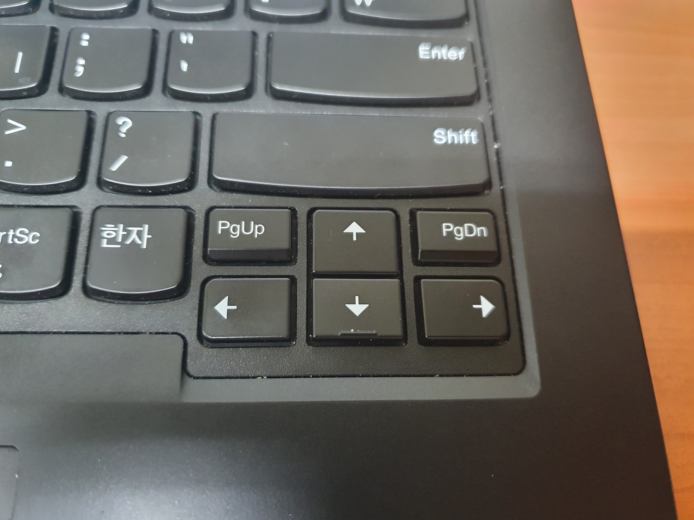

PowerToys의 다섯번째 기능은 키보드의 배열을 원하는 키로 바꾸는 기능이다. 키보드에서 자주 사용하지 않거나 실수로 누르는 키를 자주 사용하는 키로 변경할 수 있다.

내 노트북의 키보드 배열이 좌우측 방향키를 누르려고 하다가 PgUp, PgDn을 누르게 되는 상황이 많아서 PgUp은 좌측 방향키로, PgDn은 우측 방향키로 바꿔 중복하여 사용한다.